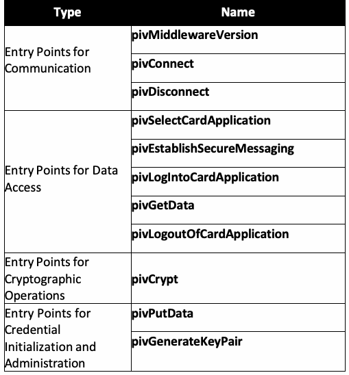
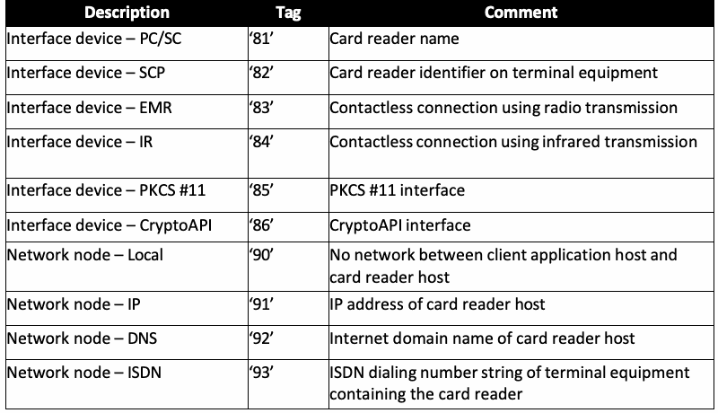
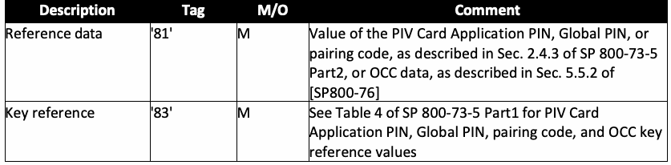

NIST Special Publication · PDF 原文抽出
Interfaces for Personal Identity Verification: Part 3 – PIV Client Application Programming Interface
個人識別検証インタフェース：第3部 PIVクライアントアプリケーションプログラミングインタフェース
NIST SP 800-73-5（Interfaces for Personal Identity Verification: Part 3 – PIV Client Application Programming Interface）の英文と日本語訳を段落ごとに並べた閲覧用ページです。PIVクライアントアプリケーションがPIVカードの認証情報を取得・利用するためのアプリケーションプログラミングインタフェースを定めます。 翻訳は非公式です。要件の確認にはNIST の正式版 PDFを参照してください。
PDF から抽出した原文は原本との照合待ちです。
PDF p.19: 二段組の可能性があるため読み順を原本と照合してください
PDF p.21: 二段組の可能性があるため読み順を原本と照合してください
NIST Special Publication 800
NIST 特別刊行物 800
未レビュー訳NIST SP 800-73pt3-5
NIST SP 800-73pt3-5
未レビュー訳Interfaces for
個人識別検証のためのインターフェース
未レビュー訳Personal Identity Verification
個人識別検証
未レビュー訳Part 3 – PIV Client Application Programming Interface
Part 3 – PIV クライアントアプリケーションプログラミングインターフェース
未レビュー訳Hildegard Ferraiolo Ketan Mehta Salvatore Francomacaro Ramaswamy Chandramouli Sarbari Gupta
Hildegard Ferraiolo、Ketan Mehta、Salvatore Francomacaro、Ramaswamy Chandramouli、Sarbari Gupta
未レビュー訳This publication is available free of charge from: https://doi.org/10.6028/NIST.SP.800-73pt3-5
本刊行物は次から無料で入手できる：https://doi.org/10.6028/NIST.SP.800-73pt3-5
未レビュー訳NIST Special Publication 800
NIST 特別刊行物 800
未レビュー訳NIST SP 800-73pt3-5
NIST SP 800-73pt3-5
未レビュー訳Interfaces for
個人識別検証のためのインターフェース
未レビュー訳Personal Identity Verification
個人識別検証
未レビュー訳Part 3 – PIV Client Application Programming Interface
Part 3 – PIV クライアントアプリケーションプログラミングインターフェース
未レビュー訳Hildegard Ferraiolo Ketan Mehta Salvatore Francomacaro Ramaswamy Chandramouli Computer Security Division
Hildegard Ferraiolo、Ketan Mehta、Salvatore Francomacaro、Ramaswamy Chandramouli、Computer Security Division
未レビュー訳Information Technology Laboratory
Information Technology Laboratory
未レビュー訳Sarbari Gupta Electrosoft Services, Inc.
Sarbari Gupta、Electrosoft Services, Inc.
未レビュー訳This publication is available free of charge from: https://doi.org/10.6028/NIST.SP.800-73pt3-5
本刊行物は次から無料で入手できる：https://doi.org/10.6028/NIST.SP.800-73pt3-5
未レビュー訳July 2024
2024年7月
未レビュー訳
U.S. Department of Commerce Gina M. Raimondo, Secretary
米国商務省 Gina M. Raimondo 長官
未レビュー訳National Institute of Standards and Technology
国立標準技術研究所
未レビュー訳Laurie E. Locascio, NIST Director and Under Secretary of Commerce for Standards and Technology
Laurie E. Locascio、NIST 所長兼商務省標準技術担当次官
未レビュー訳Certain equipment, instruments, software, or materials, commercial or non-commercial, are identified in this paper in order to specify the experimental procedure adequately. Such identification does not imply recommendation or endorsement of any product or service by NIST, nor does it imply that the materials or equipment identified are necessarily the best available for the purpose.
実験手順を十分に特定するため、本書では、商業用または非商業用の特定の機器、器具、ソフトウェアまたは材料を識別している。この識別は、NIST がいかなる製品またはサービスを推奨もしくは是認することを意味せず、また、識別された材料または機器が目的に最適であることを意味するものでもない。
未レビュー訳There may be references in this publication to other publications currently under development by NIST in accordance with its assigned statutory responsibilities. The information in this publication, including concepts and methodologies, may be used by federal agencies even before the completion of such companion publications. Thus, until each publication is completed, current requirements, guidelines, and procedures, where they exist, remain operative. For planning and transition purposes, federal agencies may wish to closely follow the development of these new publications by NIST.
本刊行物では、NIST が割り当てられた法定責務に従って現在策定中の他の刊行物を参照している場合がある。こうした関連刊行物が完成する前であっても、連邦機関は、本刊行物の情報（概念および方法論を含む）を使用してよい。したがって、各刊行物が完成するまでは、既存の要件、ガイドラインおよび手順が引き続き有効である。計画および移行のため、連邦機関は NIST によるこれらの新しい刊行物の策定状況を注意深く追跡してもよい。
未レビュー訳Organizations are encouraged to review all draft publications during public comment periods and provide feedback to NIST. Many NIST cybersecurity publications, other than the ones noted above, are available at https://csrc.nist.gov/publications.
組織には、公開コメント期間中にすべての草案刊行物を確認し、NIST にフィードバックを提供することが推奨される。上記に記載したものを除き、NIST のサイバーセキュリティ刊行物の多くは https://csrc.nist.gov/publications から入手できる。
未レビュー訳Authority This publication has been developed by NIST in accordance with its statutory responsibilities under the Federal Information Security Modernization Act (FISMA) of 2014, 44 U.S.C. § 3551 et seq., Public Law (P.L.) 113-283. NIST is responsible for developing information security standards and guidelines, including minimum requirements for federal information systems, but such standards and guidelines shall not apply to national security systems without the express approval of appropriate federal officials exercising policy authority over such systems. This guideline is consistent with the requirements of the Office of Management and Budget (OMB) Circular A-130.
権限 本刊行物は、2014年連邦情報セキュリティ近代化法 (FISMA)、44 U.S.C. § 3551 et seq.、公法 (P.L.) 113-283 に基づく法定責務に従って NIST が策定した。NIST は、連邦情報システムの最低要件を含む情報セキュリティ標準およびガイドラインの策定を担う。ただし、適切な連邦当局者が当該システムに関する政策権限を行使して明示的に承認しない限り、このような標準およびガイドラインは国家安全保障システムには適用してはならない。本ガイドラインは、行政管理予算局 (OMB) 通達 A-130 の要件に整合している。
未レビュー訳Nothing in this publication should be taken to contradict the standards and guidelines made mandatory and binding on federal agencies by the Secretary of Commerce under statutory authority. Nor should these guidelines be interpreted as altering or superseding the existing authorities of the Secretary of Commerce, Director of the OMB, or any other federal official. This publication may be used by nongovernmental organizations on a voluntary basis and is not subject to copyright in the United States. Attribution would, however, be appreciated by NIST.
本刊行物のいかなる内容も、法定権限に基づき商務長官が連邦機関に義務付け、拘束力を持たせた標準およびガイドラインに矛盾するものと解釈してはならない。また、本ガイドラインを、商務長官、OMB 長官、またはその他の連邦当局者が有する既存の権限を変更または置き換えるものと解釈してはならない。本刊行物は、非政府組織が任意で使用してよく、米国内では著作権の対象ではない。ただし、NIST は出典の明記を歓迎する。
未レビュー訳NIST Technical Series Policies Copyright, Use, and Licensing Statements NIST Technical Series Publication Identifier Syntax
NIST 技術シリーズの方針 著作権、使用およびライセンスに関する声明 NIST 技術シリーズ刊行物識別子の構文
未レビュー訳Publication History Approved by the NIST Editorial Review Board on 2024-07-03 Supersedes NIST SP 800-73-4 (May 2015; updated February 8, 2016) https://doi.org/10.6028/NIST.SP.800-73-4
刊行履歴 2024-07-03 に NIST 編集審査委員会が承認 NIST SP 800-73-4（2015年5月、2016年2月8日更新）を置き換える https://doi.org/10.6028/NIST.SP.800-73-4
未レビュー訳How to Cite this NIST Technical Series Publication: Ferraiolo H, Mehta K, Francomacaro S, Chandramouli R, Gupta S (2024) Interfaces for Personal Identity Verification: Part 3 – PIV Client Application Programming Interface. (National Institute of Standards and Technology, Gaithersburg, MD), NIST Special Publication (SP) NIST SP 800-73pt3-5. https://doi.org/10.6028/NIST.SP.800-73pt3-5
NIST 技術シリーズ刊行物の引用方法：Ferraiolo H, Mehta K, Francomacaro S, Chandramouli R, Gupta S (2024) 個人識別検証のためのインターフェース：Part 3 – PIV クライアントアプリケーションプログラミングインターフェース。（国立標準技術研究所、メリーランド州ゲイサーズバーグ）、NIST 特別刊行物 (SP) NIST SP 800-73pt3-5。https://doi.org/10.6028/NIST.SP.800-73pt3-5
未レビュー訳Author ORCID iDs Hildegard Ferraiolo: 0000-0002-7719-5999 Ketan Mehta: 0009-0001-1191-8656 Salvatore Francomacaro: 0009-0009-0487-2520 Ramaswamy Chandramouli: 0000-0002-7387-5858 Sarbari Gupta: 0000-0003-1101-0856
著者の ORCID iD Hildegard Ferraiolo: 0000-0002-7719-5999 Ketan Mehta: 0009-0001-1191-8656 Salvatore Francomacaro: 0009-0009-0487-2520 Ramaswamy Chandramouli: 0000-0002-7387-5858 Sarbari Gupta: 0000-0003-1101-0856
未レビュー訳Contact Information piv_comments@nist.gov
連絡先 piv_comments@nist.gov
未レビュー訳National Institute of Standards and Technology Attn: Computer Security Division, Information Technology Laboratory 100 Bureau Drive (Mail Stop 8930) Gaithersburg, MD 20899-8930
国立標準技術研究所 宛先：Computer Security Division, Information Technology Laboratory 100 Bureau Drive (Mail Stop 8930) Gaithersburg, MD 20899-8930
未レビュー訳Additional Information Additional information about this publications is available at https://csrc.nist.gov/pubs/sp/800/73/pt3/5/final including related content, potential updates, and document history.
追加情報 本刊行物に関する追加情報は https://csrc.nist.gov/pubs/sp/800/73/pt3/5/final で入手できる。関連コンテンツ、更新の可能性、および文書の履歴を含む。
未レビュー訳All comments are subject to release under the Freedom of Information Act (FOIA).
すべてのコメントは、情報公開法 (FOIA) に基づく公開の対象となる。
未レビュー訳Abstract
概要
未レビュー訳FIPS 201 defines the requirements and characteristics of government-wide interoperable identity credentials. It specifies that these identity credentials must be stored on a smart card and that additional common identity credentials, known as derived PIV credentials, may be issued by a federal department or agency and used when a PIV Card is not practical. This document contains the technical specifications to interface with the smart card to retrieve and use the PIV identity credentials. The specifications reflect the design goals of interoperability and PIV Card functions. The goals are addressed by specifying a PIV data model, card edge interface, and application programming interface. Moreover, this document enumerates requirements for the options and branches in international integrated circuit card standards. The specifications go further by constraining interpretations of the normative standards to ease implementation, facilitate interoperability, and ensure performance in a manner tailored for PIV applications.
FIPS 201 は、政府全体で相互運用可能な本人確認クレデンシャルの要件および特性を定義する。同規格は、これらの本人確認クレデンシャルをスマートカードに格納しなければならないと定める。また、派生 PIV クレデンシャルとして知られる追加の共通本人確認クレデンシャルを連邦省庁または機関が発行し、PIV カードが実用的でない場合に使用してもよい。本書は、スマートカードに接続して PIV 本人確認クレデンシャルを取得し使用するための技術仕様を含む。この仕様は、相互運用性および PIV カード機能という設計目標を反映している。これらの目標に対応するため、PIV データモデル、カードエッジインターフェース、およびアプリケーションプログラミングインターフェースを規定する。さらに、本書は国際集積回路カード規格における選択肢および分岐に関する要件を列挙する。この仕様は、実装を容易にし、相互運用性を促進し、PIV アプリケーションに合わせた性能を確保するため、規範的規格の解釈を制約する。
未レビュー訳Keywords
キーワード
未レビュー訳authentication; FIPS 201; identity credential; logical access control; on-card biometric comparison; Personal Identity Verification (PIV); physical access control; smart cards; secure messaging.
認証、FIPS 201、本人確認クレデンシャル、論理アクセス制御、カード上の生体情報照合、個人識別検証 (PIV)、物理アクセス制御、スマートカード、セキュアメッセージング。
未レビュー訳Reports on Computer Systems Technology
コンピュータシステム技術レポート
未レビュー訳The Information Technology Laboratory (ITL) at the National Institute of Standards and Technology (NIST) promotes the U.S. economy and public welfare by providing technical leadership for the Nation’s measurement and standards infrastructure. ITL develops tests, test methods, reference data, proof of concept implementations, and technical analyses to advance the development and productive use of information technology. ITL’s responsibilities include the development of management, administrative, technical, and physical standards and guidelines for the cost-effective security and privacy of other than national security-related information in Federal information systems. The Special Publication 800-series reports on ITL’s research, guidelines, and outreach efforts in information system security, and its collaborative activities with industry, government, and academic organizations.
国立標準技術研究所 (NIST) の情報技術研究所 (ITL) は、国の計測および標準インフラストラクチャに技術的リーダーシップを提供することで、米国経済と公共の福祉を促進する。ITL は、情報技術の発展と有効利用を促進するため、試験、試験方法、参照データ、概念実証実装、および技術分析を開発する。ITL の責務には、連邦情報システムにおける国家安全保障関連以外の情報の費用対効果に優れたセキュリティおよびプライバシーのため、管理、運用、技術および物理的な標準とガイドラインを策定することが含まれる。特別刊行物 800 シリーズは、情報システムセキュリティに関する ITL の研究、ガイドラインおよび普及活動、ならびに産業界、政府機関、学術機関との協力活動を報告する。
未レビュー訳Patent Disclosure Notice
特許開示に関する通知
未レビュー訳NOTICE: ITL has requested that holders of patent claims whose use may be required for compliance with the guidance or requirements of this publication disclose such patent claims to ITL. However, holders of patents are not obligated to respond to ITL calls for patents and ITL has not undertaken a patent search in order to identify which, if any, patents may apply to this publication. As of the date of publication and following call(s) for the identification of patent claims whose use may be required for compliance with the guidance or requirements of this publication, no such patent claims have been identified to ITL. No representation is made or implied by ITL that licenses are not required to avoid patent infringement in the use of this publication.
通知：ITL は、本刊行物のガイダンスまたは要件への準拠に使用が必要となる可能性のある特許請求項を保有する者に対し、当該特許請求項を ITL に開示するよう求めている。ただし、特許保有者は ITL の特許に関する照会に回答する義務を負わず、また ITL は、本刊行物に適用される可能性のある特許の有無を特定するための特許調査を実施していない。本刊行物の発行日現在、本刊行物のガイダンスまたは要件への準拠に使用が必要となる可能性のある特許請求項の特定を求める照会を行った結果、そのような特許請求項は ITL に対して特定されていない。本刊行物の使用において特許侵害を回避するためのライセンスが不要であると ITL が表明または暗示するものではない。
未レビュー訳Table of Contents
目次
未レビュー訳1. Introduction — 1
1. 序論 — 1
未レビュー訳2. Overview: Concepts and Constructs — 3
2. 概要：概念および構成要素 — 3
未レビュー訳3. Client Application Programming Interface — 4
3. クライアントアプリケーションプログラミングインターフェース — 4
未レビュー訳References — 15
参考文献 — 15
未レビュー訳Appendix A. List of Symbols, Abbreviations, and Acronyms — 17
付録 A. 記号、略語および頭字語の一覧 — 17
未レビュー訳Appendix B. Glossary — 19
付録 B. 用語集 — 19
未レビュー訳Appendix C. Notation — 21
付録 C. 表記法 — 21
未レビュー訳List of Tables
表一覧
未レビュー訳Table 1. Entry points on PIV client application programming interface — 4
表 1. PIV クライアントアプリケーションプログラミングインターフェースのエントリポイント — 4
未レビュー訳Table 2. Data objects in a connection description template (Tag 0x7F21) — 6
表 2. 接続記述テンプレート（タグ 0x7F21）のデータオブジェクト — 6
未レビュー訳Table 3. Data objects in an authenticator template (Tag '67') — 9
表 3. 認証器テンプレート（タグ '67'）のデータオブジェクト — 9
未レビュー訳Acknowledgments
謝辞
未レビュー訳The authors — Hildegard Ferraiolo, Ketan Mehta, Salvatore Francomacaro, and Ramaswamy Chandramouli of NIST and Sarbari Gupta of Electrosoft Services, Inc. — gratefully acknowledge the contributions of David Cooper, James Dray, William MacGregor, Scott Guthery, Teresa Schwarzhoff, and Jason Mohler, who co-authored prior versions of this three-part publication. The authors also gratefully acknowledge and appreciate the many contributions from the public and private sectors whose thoughtful and constructive comments improved the quality and usefulness of this publication.
著者である NIST の Hildegard Ferraiolo、Ketan Mehta、Salvatore Francomacaro、Ramaswamy Chandramouli、および Electrosoft Services, Inc. の Sarbari Gupta は、本3部構成の刊行物の以前の版を共同執筆した David Cooper、James Dray、William MacGregor、Scott Guthery、Teresa Schwarzhoff、Jason Mohler の貢献に深く感謝する。著者はまた、本刊行物の品質と有用性を高めた、公共部門および民間部門からの多くの思慮深く建設的なコメントに対し、深く感謝する。
未レビュー訳1. Introduction
1. 序論
未レビュー訳Homeland Security Presidential Directive-12 (HSPD-12) called for the adoption of a common identification standard to govern the interoperable use of identity credentials to allow physical and logical access to federally controlled facilities and information systems. In response, Federal Information Processing Standard (FIPS) 201 [FIPS201], Personal Identity Verification (PIV) of Federal Employees and Contractors, was developed to define reliable, government-wide identity credentials for use in applications such as access to federally controlled facilities and information systems. FIPS 201 supports multiple types of authenticators, including authenticators on smart cards (also known as PIV Cards) and derived PIV credential authenticators in various other form factors. This publication contains technical specifications to interface with PIV Cards to retrieve and use identity credentials. Other specifications, such as NIST Special Publication (SP) 800-157r1 (Revision 1), contain procedures and life cycle activities to issue, maintain, and use derived PIV credentials.
国土安全保障大統領指令第12号 (HSPD-12) は、連邦政府が管理する施設および情報システムへの物理的アクセスと論理的アクセスにおいて、本人確認クレデンシャルを相互運用可能な形で使用するための共通識別標準の採用を求めた。これを受け、連邦情報処理標準 (FIPS) 201 [FIPS201]「連邦職員および請負業者の個人識別検証 (PIV)」が策定され、連邦政府管理の施設および情報システムへのアクセスなどに使用する、信頼性の高い政府全体の本人確認クレデンシャルを定義した。FIPS 201 は、スマートカード上の認証器（PIV カードとも呼ばれる）や、さまざまな形態の派生 PIV クレデンシャル認証器など、複数種類の認証器をサポートする。本刊行物は、本人確認クレデンシャルを取得し使用するために PIV カードと接続する技術仕様を含む。NIST 特別刊行物 (SP) 800-157r1（改訂第1版）などの他の仕様には、派生 PIV クレデンシャルを発行、維持、使用するための手順およびライフサイクル活動が含まれる。
未レビュー訳1.1. Purpose
1.1. 目的
未レビュー訳FIPS 201 defines processes for binding identities to authenticators, such as the PIV Card and derived PIV credentials used in the federal PIV system. SP 800-73-5 contains the technical specifications to interface with the PIV Card to retrieve and use the identity credentials. The specifications reflect the design goals of interoperability and PIV Card functions. The goals are addressed by specifying a PIV data model, card edge interface, and application programming interface. Moreover, this document enumerates requirements for the options and branches in international integrated circuit card (ICC) standards [ISO7816]. The specifications go further by constraining interpretations of the normative standards to ease implementation, facilitate interoperability, and ensure performance in a manner tailored for PIV applications.
FIPS 201 は、連邦 PIV システムで使用する PIV カードや派生 PIV クレデンシャルなどの認証器に本人の身元を結び付けるプロセスを定義する。SP 800-73-5 は、本人確認クレデンシャルを取得し使用するために PIV カードと接続する技術仕様を含む。この仕様は、相互運用性および PIV カード機能という設計目標を反映する。これらの目標に対応するため、PIV データモデル、カードエッジインターフェース、およびアプリケーションプログラミングインターフェースを規定する。さらに、本書は国際集積回路カード (ICC) 規格 [ISO7816] における選択肢および分岐に関する要件を列挙する。この仕様は、実装を容易にし、相互運用性を促進し、PIV アプリケーションに合わせた性能を確保するため、規範的規格の解釈を制約する。
未レビュー訳1.2. Scope
1.2. 適用範囲
未レビュー訳SP 800-73-5 specifies the PIV data model, application programming interface (API), and card interface requirements necessary to comply with the use cases, as defined in Section 6 of FIPS 201 and further described in Appendix B of SP 800-73-5 Part 1. Interoperability is defined as the use of PIV identity credentials such that client-application programs, compliant card applications, and compliant ICCs CAN be used interchangeably by all information processing systems across federal agencies. SP 800-73-5 defines the PIV data elements’ identifiers, structure, and format, as well as the client API and card command interface for use with the PIV Card.
SP 800-73-5 は、FIPS 201 のセクション 6 で定義され、SP 800-73-5 Part 1 の付録 B でさらに説明されるユースケースに準拠するために必要な、PIV データモデル、アプリケーションプログラミングインターフェース (API)、およびカードインターフェース要件を規定する。相互運用性とは、連邦機関全体のすべての情報処理システムで、クライアントアプリケーションプログラム、適合するカードアプリケーション、および適合する ICC を交換可能に使用できる（CAN）ように PIV 本人確認クレデンシャルを使用することと定義される。SP 800-73-5 は、PIV データ要素の識別子、構造および形式に加え、PIV カードで使用するクライアント API とカードコマンドインターフェースを定義する。
未レビュー訳This document — SP 800-73-5, Interfaces for Personal Identity Verification: Part 3 – PIV Client Application Programming Interface — contains technical specifications for the PIV client application programming interface to the PIV Card.
本書、すなわち SP 800-73-5「個人識別検証のためのインターフェース：Part 3 – PIV クライアントアプリケーションプログラミングインターフェース」は、PIV カード向け PIV クライアントアプリケーションプログラミングインターフェースの技術仕様を含む。
未レビュー訳1.3. Audience and Assumptions
1.3. 対象読者および前提
未レビュー訳This document is intended for federal agencies and implementers of PIV systems. Readers are assumed to have a working knowledge of smart card standards and applications.
本書は、連邦機関および PIV システムの実装者を対象とする。読者は、スマートカード規格およびアプリケーションに関する実務的な知識を有するものと想定する。
未レビュー訳Readers should also be aware of the following important content in SP 800-73-5 Part 1:
読者は、SP 800-73-5 Part 1 に記載された以下の重要な内容も把握しておくことが望ましい。
未レビュー訳•The front matter details configuration management recommendations and specifies NPIVP conformance testing procedures.
•前付では、構成管理に関する推奨事項を詳述し、NPIVP 適合性試験の手順を規定する。
未レビュー訳•Appendix G provides the full Revision History of SP 800-73.
•付録 G には、SP 800-73 の改訂履歴全体を掲載する。
未レビュー訳•Section 1.3 specifies the effective date of SP 800-73-5.
•セクション 1.3 では、SP 800-73-5 の発効日を規定する。
未レビュー訳1.4. Content and Organization
1.4. 内容および構成
未レビュー訳All sections in this document are normative (i.e., mandatory for compliance) unless specified as informative (i.e., non-mandatory) and are structured as follows:
本書のすべてのセクションは、参考情報（すなわち、非必須）と明記されている場合を除き、規範的（すなわち、適合に必須）であり、以下のように構成される。
未レビュー訳•Section 1, Introduction, provides the purpose, scope, audience, and assumptions of the document and outlines its structure.
•セクション 1「序論」では、本書の目的、適用範囲、対象読者および前提を示し、その構成の概要を説明する。
未レビュー訳•Section 2, Overview: Concepts and Constructs, describes both the PIV Card Application and the PIV client API. This section is informative.
•セクション 2「概要：概念および構成要素」では、PIV カードアプリケーションと PIV クライアント API の両方を説明する。このセクションは参考情報である。
未レビュー訳•Section 3, Client Application Programming Interface, describes the set of entry points accessible by client applications through the PIV Middleware to interact with the PIV Card.
•セクション 3「クライアントアプリケーションプログラミングインターフェース」では、PIV ミドルウェアを介してクライアントアプリケーションが PIV カードとやり取りするために利用できるエントリポイントの集合を説明する。
未レビュー訳•Appendix A contains the list of acronyms used in this document. This section is informative.
•付録 A には、本書で使用する頭字語の一覧を掲載する。このセクションは参考情報である。
未レビュー訳•Appendix B contains the Glossary of terms used in this document. This section is informative.
•付録 B には、本書で使用する用語の用語集を掲載する。このセクションは参考情報である。
未レビュー訳•Appendix C explains the notation in use in this document. This section is informative.
•付録 C では、本書で用いる表記法を説明する。このセクションは参考情報である。
未レビュー訳2. Overview: Concepts and Constructs
2. 概要：概念および構成要素
未レビュー訳SP 800-73-5 Parts 2 and 3 define two interfaces to an ICC that contain the PIV Card Application: a low-level card command interface (SP 800-73-5 Part2) and a high-level client API (Part 3). SP 800-73-5 Part 3 (this document) is optional, and NIST Personal Identity Verification Program (NPIVP) conformance testing for PIV Middleware in accordance with SP 800-73 Part 3 is discontinued since endpoints support high-level client APIs natively at the time of this publication.
SP 800-73-5 Part 2 および Part 3 は、PIV カードアプリケーションを含む ICC への2種類のインターフェースを定義する。すなわち、低レベルのカードコマンドインターフェース（SP 800-73-5 Part2）と高レベルのクライアント API（Part 3）である。SP 800-73-5 Part 3（本書）は任意であり、本刊行物の時点ではエンドポイントが高レベルのクライアント API をネイティブにサポートしているため、SP 800-73 Part 3 に準拠する PIV ミドルウェアの NIST 個人識別検証プログラム (NPIVP) 適合性試験は中止されている。
未レビュー訳The information processing concepts and data constructs on both interfaces are identical and MAY be referred to generically as the information processing concepts and data constructs on the PIV interfaces without specific reference to the client API or the card command interface.
両インターフェースにおける情報処理の概念およびデータ構成要素は同一であり、クライアント API またはカードコマンドインターフェースに特に言及せず、PIV インターフェースの情報処理概念およびデータ構成要素として総称してもよい（MAY）。
未レビュー訳The client API provides task-specific programmatic access to these concepts and constructs, and the card command interface provides communication access. The client API is used by client applications using the PIV Card Application. The card command interface is used by software that implement the client API (middleware).
クライアント API は、これらの概念および構成要素に対するタスク固有のプログラムアクセスを提供し、カードコマンドインターフェースは通信アクセスを提供する。クライアント API は、PIV カードアプリケーションを使用するクライアントアプリケーションによって使用される。カードコマンドインターフェースは、クライアント API を実装するソフトウェア（ミドルウェア）によって使用される。
未レビュー訳The client API is thought of as being at a higher level than the card command interface because access to a single entry point on the client API may cause multiple card commands to traverse the card command interface. In other words, it may require more than one card command on the card command interface to accomplish the task represented by a single call on an entry point of the client API.
クライアント API は、カードコマンドインターフェースよりも高レベルに位置付けられる。クライアント API の単一のエントリポイントへのアクセスにより、複数のカードコマンドがカードコマンドインターフェースを通過する場合があるためである。言い換えると、クライアント API のエントリポイントに対する単一の呼び出しで表されるタスクを実行するために、カードコマンドインターフェース上で複数のカードコマンドが必要となる場合がある。
未レビュー訳The client API is a program execution, call/return style interface, whereas the card command interface is a communication protocol, command/response style interface. Because of this difference, the representation of the PIV concepts and constructs as bits and bytes on the client API may be different from the representation of these same concepts and constructs on the card command interface.
クライアント API はプログラム実行型の呼び出し／復帰形式のインターフェースである一方、カードコマンドインターフェースは通信プロトコルであり、コマンド／応答形式のインターフェースである。この違いにより、クライアント API 上でビットおよびバイトとして表される PIV の概念および構成要素は、カードコマンドインターフェース上における同じ概念および構成要素の表現と異なる場合がある。
未レビュー訳3. Client Application Programming Interface
3. クライアントアプリケーションプログラミングインターフェース
未レビュー訳Table 1 lists the entry points on the PIV client API. This section references object identifiers (OIDs), which are defined and can be found in SP 800-73-5 Part1, Table 3.
表 1 に PIV クライアント API のエントリポイントを示す。本節では、SP 800-73-5 Part1 の表 3 で定義され、参照できるオブジェクト識別子 (OID) を参照する。
未レビュー訳Table 1. Entry points on PIV client application programming interface
表 1. PIV クライアントアプリケーションプログラミングインターフェースのエントリポイント
未レビュー訳| Type | Name |
| Entry Points for Communication | pivMiddlewareVersion |
| pivConnect | |
| pivDisconnect | |
| Entry Points for Data Access | pivSelectCardApplication |
| pivEstablishSecureMessaging | |
| pivLogIntoCardApplication | |
| pivGetData | |
| pivLogoutOfCardApplication | |
| Entry Points for Cryptographic Operations | pivCrypt |
| Entry Points for Credential Initialization and Administration | pivPutData |
| pivGenerateKeyPair |
原本の表画像

| 種別 | 名前 |
| 通信のエントリポイント | pivMiddlewareVersion |
| pivConnect | |
| pivDisconnect | |
| データアクセスのエントリポイント | pivSelectCardApplication |
| pivEstablishSecureMessaging | |
| pivLogIntoCardApplication | |
| pivGetData | |
| pivLogoutOfCardApplication | |
| 暗号操作のエントリポイント | pivCrypt |
| クレデンシャルの初期化および管理のエントリポイント | pivPutData |
| pivGenerateKeyPair |
If both the PIV Middleware and the PIV Card support secure messaging, then all non-card management functionality1 of the PIV Card MAY be accessed over either the contact or contactless interface of the card. In order to perform non-card management functionality that would otherwise be limited to the contact interface, the client application must first establish a virtual contact interface by calling the pivEstablishSecureMessaging function and using the pivLogIntoCardApplication function to submit the pairing code to the card.2 If the client application does not have another means of determining whether communication with the PIV Card is over a contact or contactless interface, it MAY use the pivGetData function to attempt to read a mandatory data object (e.g., such as the X.509 Certificate for PIV Authentication or the security object) that has an access rule for read of “Always.” However, that is only accessible over the contact and virtual contact interfaces (see SP 800-73-5 Part1, Table 2). If the return code from pivGetData is
PIV ミドルウェアと PIV カードの両方がセキュアメッセージングをサポートする場合、PIV カードのカード管理以外のすべての機能¹に、カードの接触型または非接触型インターフェースのいずれかを介してアクセスしてもよい (MAY)。接触型インターフェースに限定されるカード管理以外の機能を実行するには、クライアントアプリケーションは、まず pivEstablishSecureMessaging 関数を呼び出して仮想接触型インターフェースを確立し、pivLogIntoCardApplication 関数を使用してペアリングコードをカードに送信しなければならない (must)。クライアントアプリケーションが、PIV カードとの通信が接触型か非接触型かを判断する別の手段を持たない場合、アクセス規則が「Always（常時）」の読み取りである必須データオブジェクト（例：PIV 認証用 X.509 証明書またはセキュリティオブジェクト）を読み取るために、pivGetData 関数を試行的に使用してもよい (MAY)。ただし、これは接触型および仮想接触型インターフェースを介してのみアクセス可能である（SP 800-73-5 Part1、表 2 参照）。pivGetData からの戻りコードが
未レビュー訳, then the
、である場合、
未レビュー訳PIV_SECURITY_CONDITIONS_NOT_SATISFIED
PIV_SECURITY_CONDITIONS_NOT_SATISFIED
未レビュー訳communication with the card is over a contactless interface.
カードとの通信は非接触型インターフェースを介して行われている。
未レビュー訳3.1. Entry Points for Communication
3.1. 通信のエントリポイント
未レビュー訳3.1.1. pivMiddlewareVersion
3.1.1. pivMiddlewareVersion
未レビュー訳Returns the PIV Middleware version string
PIV ミドルウェアのバージョン文字列を返す
未レビュー訳Purpose:
目的：
未レビュー訳Prototype:
プロトタイプ：
未レビュー訳status_word pivMiddlewareVersion( OUT version
status_word pivMiddlewareVersion( OUT version
未レビュー訳versionString
versionString
未レビュー訳);
未レビュー訳Parameter:
パラメータ：
未レビュー訳versionString
versionString
未レビュー訳•For SP 800-73-5 Part 3 conformant PIV Middleware, the parameter returns “800-73-5 Client API” or “800-73-5 Client API with SM.”
•SP 800-73-5 Part 3 に適合する PIV ミドルウェアでは、このパラメータは “800-73-5 Client API” または “800-73-5 Client API with SM” を返す。
未レビュー訳•For SP 800-73-4 Part 3 conformant middleware, the parameter returns “800-73-4 Client API” or “800-73-4 Client API with SM.”
•SP 800-73-4 Part 3 に適合するミドルウェアでは、このパラメータは “800-73-4 Client API” または “800-73-4 Client API with SM” を返す。
未レビュー訳•Earlier versions with versionString (e.g., “800-73-3 Client API,” “800-73-2 Client API,” and “800-78-1 Client API”) are discontinued as they do not conform to the requirements of FIPS 201-3.
•versionString が以前のバージョンを示すもの（例：“800-73-3 Client API”、“800-73-2 Client API”、“800-78-1 Client API”）は、FIPS 201-3 の要件に適合しないため廃止されている。
未レビュー訳Return Codes:
戻りコード：
未レビュー訳PIV_OK
PIV_OK
未レビュー訳PIV Middleware that returns a versionString of “800-73-5 Client API with SM” and “800-73-4 Client API with SM” SHALL implement all PIV Middleware functions listed in Table 1 and be able to recognize and process all mandatory and optional PIV data objects. PIV Middleware that returns a versionString of “800-73-5 Client API” and “800-73-4 Client API” SHALL implement all PIV Middleware functions listed in Table 1 except for pivEstablishSecureMessaging and SHALL be able to recognize and process all mandatory and optional PIV data objects.
versionString が “800-73-5 Client API with SM” または “800-73-4 Client API with SM” を返す PIV ミドルウェアは、表 1 に記載されたすべての PIV ミドルウェア関数を実装し、必須および任意のすべての PIV データオブジェクトを認識して処理できなければならない (SHALL)。versionString が “800-73-5 Client API” または “800-73-4 Client API” を返す PIV ミドルウェアは、pivEstablishSecureMessaging を除く表 1 に記載されたすべての PIV ミドルウェア関数を実装しなければならない (SHALL)。また、必須および任意のすべての PIV データオブジェクトを認識して処理できなければならない (SHALL)。
未レビュー訳3.1.2. pivConnect
3.1.2. pivConnect
未レビュー訳Purpose: Connects the client API to the PIV Card Application on a specific ICC.
目的：特定の ICC 上の PIV カードアプリケーションにクライアント API を接続する。
未レビュー訳Prototype:
プロトタイプ：
未レビュー訳status_word pivConnect( IN Boolean
status_word pivConnect( IN Boolean
未レビュー訳sharedConnection,
sharedConnection,
未レビュー訳INOUT sequence of bytes connectionDescription, INOUT LONG
INOUT sequence of bytes connectionDescription, INOUT LONG
未レビュー訳CDLength,
CDLength,
未レビュー訳OUT handle
OUT handle
未レビュー訳cardHandle
cardHandle
未レビュー訳);
未レビュー訳Parameters:
パラメータ：
未レビュー訳If TRUE, other client applications CAN stablish
TRUE の場合、他のクライアントアプリケーションは接続を「stablish」することができる (CAN)。
未レビュー訳sharedConnection
sharedConnection
未レビュー訳concurrent connections to the ICC. If FALSE and the connection is established, then the calling client application has exclusive access to the
ICC への同時接続。FALSE で接続が確立された場合、呼び出し元のクライアントアプリケーションは
未レビュー訳ICC.
ICC への排他的アクセス権を持つ。
未レビュー訳A connection description data object (tag
接続記述データオブジェクト（タグ
未レビュー訳connectionDescription
connectionDescription
未レビュー訳0x7F21). See Table 2.
0x7F21）。表 2 参照。
未レビュー訳If the length of the value field of the ‘8x’ data object in the connection description data object is zero, then a list of the card readers of the type indicated by the tag of the ‘8x’ series data object and available at the ‘9x’ location is returned in the connectionDescription.
接続記述データオブジェクト内の「8x」データオブジェクトの値フィールドの長さが 0 の場合、「8x」系列データオブジェクトのタグで示され、「9x」の位置で利用可能な種類のカードリーダーの一覧が connectionDescription に返される。
未レビュー訳In order to provide sufficient space for the return value, the client application SHALL allocate a buffer of at least 2048 bytes for connectionDescription.
戻り値に十分な領域を確保するため、クライアントアプリケーションは connectionDescription 用に少なくとも 2048 バイトのバッファを割り当てなければならない (SHALL)。
未レビュー訳The connection description BER-TLV [ISO8825] used on the PIV client API SHALL have the structure described in Table 2.
PIV クライアント API で使用する接続記述 BER-TLV [ISO8825] は、表 2 に記載の構造でなければならない (SHALL)。
未レビュー訳Table 2. Data objects in a connection description template (Tag 0x7F21)
表 2. 接続記述テンプレート（タグ 0x7F21）のデータオブジェクト
未レビュー訳| Description | Tag | Comment |
| Interface device – PC/SC | ‘81’ | Card reader name |
| Interface device – SCP | ‘82’ | Card reader identifier on terminal equipment |
| Interface device – EMR | ‘83’ | Contactless connection using radio transmission |
| Interface device – IR | ‘84’ | Contactless connection using infrared transmission |
| Interface device – PKCS #11 | ‘85’ | PKCS #11 interface |
| Interface device – CryptoAPI | ‘86’ | CryptoAPI interface |
| Network node – Local | ‘90’ | No network between client application host and card reader host |
| Network node – IP | ‘91’ | IP address of card reader host |
| Network node – DNS | ‘92’ | Internet domain name of card reader host |
| Network node – ISDN | ‘93’ | ISDN dialing number string of terminal equipment containing the card reader |
原本の表画像

| 説明 | タグ | 注記 |
| インターフェース装置 – PC/SC | ‘81’ | カードリーダー名 |
| インターフェース装置 – SCP | ‘82’ | 端末装置上のカードリーダー識別子 |
| インターフェース装置 – EMR | ‘83’ | 無線伝送を使用する非接触接続 |
| インターフェース装置 – IR | ‘84’ | 赤外線伝送を使用する非接触接続 |
| インターフェース装置 – PKCS #11 | ‘85’ | PKCS #11 インターフェース |
| インターフェース装置 – CryptoAPI | ‘86’ | CryptoAPI インターフェース |
| ネットワークノード – ローカル | ‘90’ | クライアントアプリケーションのホストとカードリーダーのホスト間にネットワークがない |
| ネットワークノード – IP | ‘91’ | カードリーダーホストの IP アドレス |
| ネットワークノード – DNS | ‘92’ | カードリーダーホストのインターネットドメイン名 |
| ネットワークノード – ISDN | ‘93’ | カードリーダーを含む端末装置の ISDN ダイヤル番号文字列 |
At most one selection from the ‘8x’ series and one selection from the ‘9x’ series SHALL appear in the connection description template. For example, ‘7F 21 0C 82 04 41 63 6D 65 91 04 C0 00 02 17’ describes a connection to a generic card reader at internet address 192.0.2.23. In another example, ‘7F 21 0B 82 01 00 93 06 16 17 55 50 12 3F’ describes a connection to the subscriber identity module in the mobile phone at +1 617 555 0123.
「8x」系列から最大1つ、「9x」系列から最大1つを接続記述テンプレートに含めなければならない (SHALL)。例えば、「7F 21 0C 82 04 41 63 6D 65 91 04 C0 00 02 17」は、インターネットアドレス 192.0.2.23 にある汎用カードリーダーへの接続を表す。別の例として、「7F 21 0B 82 01 00 93 06 16 17 55 50 12 3F」は、+1 617 555 0123 の携帯電話内の加入者識別モジュールへの接続を表す。
未レビュー訳When used as an argument to the pivConnect entry point on the PIV client API described in this section, an ‘8x’ series data object with zero length and a ‘9x’ series data object request the return of all available card readers of the described type on the described node. Thus, ‘7F 21 04 81 00 90 00’ would request a list of all available PC/SC card readers on the host on which the client application was running.
本節で説明する PIV クライアント API の pivConnect エントリポイントへの引数として使用する場合、長さがゼロの「8x」系列データオブジェクトと「9x」系列データオブジェクトは、指定されたノード上にある指定種類の利用可能なカードリーダーをすべて返すよう要求する。したがって、「7F 21 04 81 00 90 00」は、クライアントアプリケーションが実行されているホスト上の利用可能な PC/SC カードリーダーをすべて一覧表示するよう要求する。
未レビュー訳Length of the card description parameter
カード記述パラメータの長さ
未レビュー訳CDLength
CDLength
未レビュー訳The returned opaque identifier of a
特定の ICC への通信チャネル、ひいてはカード自体を表す、返される不透明な識別子
未レビュー訳cardHandle
cardHandle
未レビュー訳communication channel to a particular ICC and, hence, of the card itself. cardHandle is used in all other entry points on the PIV client API to identify which card the functionality of the entry point should be applied to.
。cardHandle は、PIV クライアント API の他のすべてのエントリポイントで、エントリポイントの機能をどのカードに適用するかを識別するために使用される。
未レビュー訳Return Codes:
戻りコード：
未レビュー訳PIV_OK PIV_CONNECTION_DESCRIPTION_MALFORMED PIV_CONNECTION_FAILURE PIV_CONNECTION_LOCKED
PIV_OK PIV_CONNECTION_DESCRIPTION_MALFORMED PIV_CONNECTION_FAILURE PIV_CONNECTION_LOCKED
未レビュー訳3.1.3. pivDisconnect
3.1.3. pivDisconnect
未レビュー訳Purpose: Disconnect the PIV API from the PIV Card Application and the ICC that contains
目的：PIV API を、PIV カードアプリケーションおよびそれを含む ICC から切断する。
未レビュー訳the PIV Card Application.
PIV カードアプリケーション。
未レビュー訳Prototype:
プロトタイプ：
未レビュー訳status_word pivDisconnect( IN handle cardHandle );
status_word pivDisconnect( IN handle cardHandle );
未レビュー訳Opaque identifier of the card to be acted upon
操作対象カードの不透明な識別子
未レビュー訳Parameters:
パラメータ：
未レビュー訳cardHandle
cardHandle
未レビュー訳as returned by pivConnect. The value of cardHandle is undefined upon return from pivDisconnect.
pivConnect が返した値。pivDisconnect から戻る際、cardHandle の値は未定義となる。
未レビュー訳Return Codes:
戻りコード：
未レビュー訳PIV_OK PIV_INVALID_CARD_HANDLE PIV_CARD_READER_ERROR
PIV_OK PIV_INVALID_CARD_HANDLE PIV_CARD_READER_ERROR
未レビュー訳If secure messaging has been established, then the PIV Middleware SHALL zeroize the secure messaging session keys.
セキュアメッセージングが確立されている場合、PIV ミドルウェアはセキュアメッセージングのセッション鍵をゼロ化しなければならない (SHALL)。
未レビュー訳3.2. Entry Points for Data Access
3.2. データアクセスのエントリポイント
未レビュー訳3.2.1. pivSelectCardApplication
3.2.1. pivSelectCardApplication
未レビュー訳Purpose: Set the PIV Card Application as the currently selected card application and establish the PIV Card Application’s security state.
目的：PIV カードアプリケーションを現在選択されているカードアプリケーションとして設定し、PIV カードアプリケーションのセキュリティ状態を確立する。
未レビュー訳Prototype:
プロトタイプ：
未レビュー訳status_word pivSelectCardApplication( IN handle
status_word pivSelectCardApplication( IN handle
未レビュー訳cardHandle,
cardHandle,
未レビュー訳IN sequence of byte applicationAID, IN LONG
IN sequence of byte applicationAID, IN LONG
未レビュー訳aidLength,
aidLength,
未レビュー訳OUT sequence of byte applicationProperties,
OUT sequence of byte applicationProperties,
未レビュー訳INOUT LONG
INOUT LONG
未レビュー訳APLength
APLength
未レビュー訳);
未レビュー訳Opaque identifier of the card to be acted upon as
操作対象カードの不透明な識別子として
未レビュー訳Parameters:
パラメータ：
未レビュー訳cardHandle
cardHandle
未レビュー訳returned by pivConnect
pivConnect が返す
未レビュー訳Length of the PIV Card Application AID
PIV カードアプリケーション AID の長さ
未レビュー訳aidLength
aidLength
未レビュー訳The AID of the PIV Card Application that is to
対象となる PIV カードアプリケーションの AID。この AID は
未レビュー訳applicationAID
applicationAID
未レビュー訳become the currently selected card application
現在選択されているカードアプリケーションとなる
未レビュー訳The application properties of the selected PIV Card
選択された PIV カードアプリケーションのアプリケーションプロパティ
未レビュー訳applicationProperties
applicationProperties
未レビュー訳Application; see SP 800-73-5 Part2, Table 3
アプリケーション。表 3 参照（SP 800-73-5 Part2）。
未レビュー訳As an input, length of the buffer allocated for
入力の場合、割り当てられたバッファの長さ
未レビュー訳APLength
APLength
未レビュー訳applicationProperties; as an output, length of the application properties
applicationProperties 用。出力の場合、アプリケーションプロパティの長さ
未レビュー訳Return Codes:
戻りコード：
未レビュー訳PIV_OK PIV_INVALID_CARD_HANDLE PIV_CARD_APPLICATION_NOT_FOUND PIV_CARD_READER_ERROR PIV_INSUFFICIENT_BUFFER If the length of application properties is longer than the buffer allocated by the client
PIV_OK PIV_INVALID_CARD_HANDLE PIV_CARD_APPLICATION_NOT_FOUND PIV_CARD_READER_ERROR PIV_INSUFFICIENT_BUFFER アプリケーションプロパティの長さがクライアントアプリケーションに割り当てられたバッファより長い場合
未レビュー訳application, then the PIV Middleware SHALL return
その場合、PIV ミドルウェアは次の値を返さなければならない (SHALL return)。
未レビュー訳but SHALL still
ただし、なお次の値を返し、APLength を設定しなければならない (SHALL still)。
未レビュー訳PIV_INSUFFICIENT_BUFFER
PIV_INSUFFICIENT_BUFFER
未レビュー訳set APLength to the length of the application properties.
アプリケーションプロパティの長さを APLength に設定する。
未レビュー訳3.2.2. pivEstablishSecureMessaging
3.2.2. pivEstablishSecureMessaging
未レビュー訳Purpose: Establish secure messaging with the PIV Card Application.
目的：PIV カードアプリケーションとのセキュアメッセージングを確立する。
未レビュー訳Prototype:
プロトタイプ：
未レビュー訳status_word pivEstablishSecureMessaging( IN handle cardHandle,
status_word pivEstablishSecureMessaging( IN handle cardHandle,
未レビュー訳);
未レビュー訳Opaque identifier of the card to be acted upon
操作対象カードの不透明な識別子
未レビュー訳Parameters:
パラメータ：
未レビュー訳cardHandle
cardHandle
未レビュー訳pivConnect が
未レビュー訳returned by pivConnect
返す
未レビュー訳Return Codes:
戻りコード：
未レビュー訳PIV_OK PIV_INVALID_CARD_HANDLE PIV_CARD_READER_ERROR PIV_SM_FAILED
PIV_OK PIV_INVALID_CARD_HANDLE PIV_CARD_READER_ERROR PIV_SM_FAILED
未レビュー訳After successful execution of the key establishment protocol, the PIV Middleware SHALL perform all subsequent GET DATA, VERIFY, and GENERAL AUTHENTICATE commands over secure messaging with the exception of any subsequent uses of the GENERAL AUTHENTICATE command to perform the key establishment protocol.
鍵確立プロトコルの正常な実行後、PIV ミドルウェアは、その後のすべての GET DATA、VERIFY、および GENERAL AUTHENTICATE コマンドをセキュアメッセージングで実行しなければならない (SHALL)。ただし、鍵確立プロトコルを実行するために GENERAL AUTHENTICATE コマンドを後続で使用する場合は除く。
未レビュー訳3.2.3. pivLogIntoCardApplication
3.2.3. pivLogIntoCardApplication
未レビュー訳Purpose: Set the security state within the PIV Card Application.
目的：PIV カードアプリケーション内のセキュリティ状態を設定する。
未レビュー訳Prototype:
プロトタイプ：
未レビュー訳status_word pivLogIntoCardApplication( IN handle cardHandle,
status_word pivLogIntoCardApplication( IN handle cardHandle,
未レビュー訳IN sequence of byte authenticators, IN LONG AuthLength );
IN sequence of byte authenticators, IN LONG AuthLength );
未レビュー訳Opaque identifier of the card to be acted upon
操作対象カードの不透明な識別子
未レビュー訳Parameters:
パラメータ：
未レビュー訳cardHandle
cardHandle
未レビュー訳as returned by pivConnect
pivConnect が返した値
未レビュー訳A sequence of zero or more BER-TLV-encoded
BER-TLV で符号化された 0 個以上の認証器の列
未レビュー訳authenticators
authenticators
未レビュー訳authenticators to be used to authenticate and set the security state/status in the PIV Card Application context.
PIV カードアプリケーションのコンテキスト内で認証を行い、セキュリティ状態／ステータスを設定するために使用する認証器
未レビュー訳The authenticator BER-TLV used on the PIV client API SHALL have the structure described in Table 3.
PIV クライアント API で使用する認証器 BER-TLV は、表 3 に記載の構造でなければならない (SHALL)。
未レビュー訳Length of the authenticator template.
認証器テンプレートの長さ。
未レビュー訳AuthLength
AuthLength
未レビュー訳Table 3. Data objects in an authenticator template (Tag '67')
表 3. 認証器テンプレート（タグ '67'）内のデータオブジェクト
未レビュー訳| Description | Tag | M/O | Comment |
| Reference data | '81' | M | Value of the PIV Card Application PIN, Global PIN, or pairing code, as described in Sec. 2.4.3 of SP 800-73-5 Part2, or OCC data, as described in Sec. 5.5.2 of [SP800-76] |
| Key reference | '83' | M | See Table 4 of SP 800-73-5 Part1 for PIV Card Application PIN, Global PIN, pairing code, and OCC key reference values |
原本の表画像

| 説明 | タグ | M/O | 注記 |
| 参照データ | '81' | M | SP 800-73-5 Part2 のセクション 2.4.3 に記載の PIV カードアプリケーション PIN、Global PIN、またはペアリングコードの値、あるいは [SP800-76] のセクション 5.5.2 に記載の OCC データ |
| 鍵参照 | '83' | M | PIV カードアプリケーション PIN、Global PIN、ペアリングコードおよび OCC の鍵参照値については、SP 800-73-5 Part1 の表 4 を参照 |
Return Codes:
戻りコード：
未レビュー訳PIV_OK PIV_INVALID_CARD_HANDLE PIV_AUTHENTICATOR_MALFORMED PIV_AUTHENTICATION_FAILURE PIV_SECURITY_CONDITIONS_NOT_SATISFIED PIV_CARD_READER_ERROR PIV_SM_FAILED The PIV Middleware SHALL NOT submit authenticators to the PIV Card over a contactless
PIV_OK PIV_INVALID_CARD_HANDLE PIV_AUTHENTICATOR_MALFORMED PIV_AUTHENTICATION_FAILURE PIV_SECURITY_CONDITIONS_NOT_SATISFIED PIV_CARD_READER_ERROR PIV_SM_FAILED PIV ミドルウェアは、セキュアメッセージングなしで認証器を PIV カードに非接触型で送信してはならない (SHALL NOT)
未レビュー訳interface without secure messaging. If secure messaging has not been established, then the pivLogIntoCardApplication function SHALL return
インターフェースを介して。セキュアメッセージングが確立されていない場合、pivLogIntoCardApplication 関数は次を返さなければならない (SHALL return)
未レビュー訳。
未レビュー訳PIV_SECURITY_CONDITIONS_NOT_SATISFIED
PIV_SECURITY_CONDITIONS_NOT_SATISFIED
未レビュー訳3.2.3.1. pivGetData
3.2.3.1. pivGetData
未レビュー訳Purpose: Return the entire data content of the named data object.
目的：指定されたデータオブジェクトのデータ内容全体を返す。
未レビュー訳Prototype:
プロトタイプ：
未レビュー訳status_word pivGetData( IN handle
status_word pivGetData( IN handle
未レビュー訳cardHandle,
cardHandle,
未レビュー訳IN string
IN string
未レビュー訳OID,
OID,
未レビュー訳IN LONG
IN LONG
未レビュー訳oidLength,
oidLength,
未レビュー訳OUT sequence of byte data, INOUT LONG
OUT sequence of byte data, INOUT LONG
未レビュー訳DataLength
DataLength
未レビュー訳);
未レビュー訳Parameters:
パラメータ：
未レビュー訳Opaque identifier of the card to be acted upon as
操作対象カードの不透明な識別子として
未レビュー訳cardHandle
cardHandle
未レビュー訳returned by pivConnect
pivConnect が返した値
未レビュー訳Object identifier of the object whose data content
データ内容を取得するオブジェクトのオブジェクト識別子
未レビュー訳OID
OID
未レビュー訳is to be retrieved coded as a string (e.g., “2.16.840.1.101.3.7.2.96.80”). See SP 800-73-5 Part1, Table 3.
文字列として符号化して指定する（例：“2.16.840.1.101.3.7.2.96.80”）。SP 800-73-5 Part1、表 3 参照。
未レビュー訳Length of the object identifier.
オブジェクト識別子の長さ。
未レビュー訳oidLength
oidLength
未レビュー訳Retrieved data content.
取得したデータ内容。
未レビュー訳data
data
未レビュー訳As an input, length of the buffer allocated for data.
入力の場合、data 用に割り当てられたバッファの長さ。
未レビュー訳DataLength
DataLength
未レビュー訳As an output, length of the data retrieved from the PIV Card.
出力の場合、PIV カードから取得したデータの長さ。
未レビュー訳Return Codes:
戻りコード：
未レビュー訳PIV_OK PIV_INVALID_CARD_HANDLE PIV_INVALID_OID PIV_DATA_OBJECT_NOT_FOUND PIV_SECURITY_CONDITIONS_NOT_SATISFIED PIV_CARD_READER_ERROR PIV_SM_FAILED PIV_INSUFFICIENT_BUFFER If the length of the retrieved data is longer than the buffer allocated by the client application,
PIV_OK PIV_INVALID_CARD_HANDLE PIV_INVALID_OID PIV_DATA_OBJECT_NOT_FOUND PIV_SECURITY_CONDITIONS_NOT_SATISFIED PIV_CARD_READER_ERROR PIV_SM_FAILED PIV_INSUFFICIENT_BUFFER 取得データの長さがクライアントアプリケーションによって割り当てられたバッファより長い場合、
未レビュー訳then the PIV Middleware SHALL return
その場合、PIV ミドルウェアは次を返さなければならない (SHALL return)。
未レビュー訳but SHALL still set
ただし、なお設定しなければならない (SHALL still set)
未レビュー訳PIV_INSUFFICIENT_BUFFER DataLength to the length of the retrieved data. If the PIV Card Application returns a zero-length
PIV_INSUFFICIENT_BUFFER。DataLength を取得データの長さに設定する。PIV カードアプリケーションが長さ 0 の
未レビュー訳data object, then the PIV Middleware SHALL return
データオブジェクトを返した場合、PIV ミドルウェアは次を返さなければならない (SHALL return)
未レビュー訳。
未レビュー訳PIV_DATA_OBJECT_NOT_FOUND
PIV_DATA_OBJECT_NOT_FOUND
未レビュー訳3.2.4. pivLogoutOfCardApplication
3.2.4. pivLogoutOfCardApplication
未レビュー訳Purpose: Reset the application security state/status of the PIV Card Application.
目的：PIV カードアプリケーションのアプリケーションセキュリティ状態／ステータスをリセットする。
未レビュー訳Prototype:
プロトタイプ：
未レビュー訳status_word pivLogoutOfCardApplication( IN handle cardHandle );
status_word pivLogoutOfCardApplication( IN handle cardHandle );
未レビュー訳Opaque identifier of the card to be acted upon as
操作対象カードの不透明な識別子として
未レビュー訳Parameters:
パラメータ：
未レビュー訳cardHandle
cardHandle
未レビュー訳returned by pivConnect. The cardHandle remains valid after execution of this function.
pivConnect が返した値。この関数の実行後も cardHandle は有効なままである。
未レビュー訳Return Codes:
戻りコード：
未レビュー訳PIV_OK
PIV_OK
未レビュー訳PIV_INVALID_CARD_HANDLE PIV_CARD_READER_ERROR
PIV_INVALID_CARD_HANDLE PIV_CARD_READER_ERROR
未レビュー訳3.3. Entry Points for Cryptographic Operations
3.3. 暗号操作のエントリポイント
未レビュー訳3.3.1. pivCrypt
3.3.1. pivCrypt
未レビュー訳Purpose: Perform a cryptographic operation,3 such as encryption or signing on a sequence
目的：暗号演算（暗号化や署名など）をバイト列に対して実行する,3。
未レビュー訳of bytes. SP 800-73-5 Part1, Appendix C describes recommended procedures for PIV algorithm identifier discovery.
SP 800-73-5 Part1 の付録 C では、PIV アルゴリズム識別子を特定するための推奨手順を説明する。
未レビュー訳Prototype:
プロトタイプ：
未レビュー訳status_word pivCrypt( IN handle
status_word pivCrypt( IN handle
未レビュー訳cardHandle,
cardHandle,
未レビュー訳IN byte
IN byte
未レビュー訳algorithmIdentifier,
algorithmIdentifier,
未レビュー訳IN byte
IN byte
未レビュー訳keyReference,
keyReference,
未レビュー訳IN sequence of byte algorithmInput, IN LONG
IN sequence of byte algorithmInput, IN LONG
未レビュー訳inputLength,
inputLength,
未レビュー訳OUT sequence of byte algorithmOutput, INOUT LONG
OUT sequence of byte algorithmOutput, INOUT LONG
未レビュー訳outputLength
outputLength
未レビュー訳);
未レビュー訳Opaque identifier of the card to be acted upon as
操作対象カードの不透明な識別子として
未レビュー訳Parameters:
パラメータ：
未レビュー訳cardHandle
cardHandle
未レビュー訳returned by pivConnect
pivConnect が返した値
未レビュー訳Identifier of the cryptographic algorithm to be used
使用する暗号アルゴリズムの識別子
未レビュー訳algorithmIdentifier
algorithmIdentifier
未レビュー訳for the cryptographic operation [SP800-78, Tables 9 and 10 ]
暗号操作用 [SP800-78、表 9 および 10]
未レビュー訳Identifier of the on-card key to be used for the
使用するカード上の鍵の識別子
未レビュー訳keyReference
keyReference
未レビュー訳cryptographic operation. See [SP800-78, Table 8] and SP 800-73-5 Part1, Table 5.
暗号操作。 [SP800-78、表 8] および SP 800-73-5 Part1、表 5 参照。
未レビュー訳Sequence of bytes used as the input to the
暗号操作への入力として使用するバイト列
未レビュー訳algorithmInput
algorithmInput
未レビュー訳cryptographic operation. The algorithmInput for RSA algorithms SHALL be restricted to the range 0 to n-1, where n is the RSA modulus.
RSA アルゴリズムの場合、algorithmInput は 0 から n-1 までの範囲に制限しなければならない (SHALL)。ここで n は RSA 法である。
未レビュー訳Length of the algorithm input
アルゴリズム入力の長さ
未レビュー訳inputLength
inputLength
未レビュー訳Sequence of bytes output by the cryptographic
暗号操作によって出力されるバイト列
未レビュー訳algorithmOutput
algorithmOutput
未レビュー訳operation
操作
未レビュー訳As an input, length of the buffer allocated for
入力の場合、割り当てられたバッファの長さ
未レビュー訳outputLength
outputLength
未レビュー訳algorithmOutput. As an output, length of the algorithm output.
algorithmOutput 用。出力の場合、アルゴリズム出力の長さ。
未レビュー訳Return Codes:
戻りコード：
未レビュー訳PIV_OK PIV_INVALID_CARD_HANDLE PIV_INVALID_KEYREF_OR_ALGORITHM PIV_SECURITY_CONDITIONS_NOT_SATISFIED PIV_INPUT_BYTES_MALFORMED PIV_CARD_READER_ERROR PIV_SM_FAILED PIV_INSUFFICIENT_BUFFER
PIV_OK PIV_INVALID_CARD_HANDLE PIV_INVALID_KEYREF_OR_ALGORITHM PIV_SECURITY_CONDITIONS_NOT_SATISFIED PIV_INPUT_BYTES_MALFORMED PIV_CARD_READER_ERROR PIV_SM_FAILED PIV_INSUFFICIENT_BUFFER
未レビュー訳The
この
未レビュー訳error condition indicates that some property of the data to
エラー状態は、処理対象データの何らかの特性（例えば、長さやパディング）が
未レビュー訳PIV_INPUT_BYTES_MALFORMED be processed, such as the length or padding, was inappropriate for the requested cryptographic algorithm or key.
PIV_INPUT_BYTES_MALFORMED 要求された暗号アルゴリズムまたは鍵に対して不適切であったことを示す。
未レビュー訳If the value of keyReference is '04' (PIV Secure Messaging key), then the PIV Middleware SHALL return .
keyReference の値が '04'（PIV セキュアメッセージング鍵）である場合、PIV ミドルウェアは次を返さなければならない (SHALL return)。
未レビュー訳PIV_INVALID_KEYREF_OR_ALGORITHM
PIV_INVALID_KEYREF_OR_ALGORITHM
未レビュー訳If the length of the algorithm output is longer than the buffer allocated by the client application, then the PIV Middleware SHALL return
アルゴリズム出力の長さがクライアントアプリケーションによって割り当てられたバッファより長い場合、PIV ミドルウェアは次を返さなければならない (SHALL return)
未レビュー訳but SHALL still
ただし、なお設定しなければならない (SHALL still set)
未レビュー訳PIV_INSUFFICIENT_BUFFER
PIV_INSUFFICIENT_BUFFER
未レビュー訳set outputLength to the length of the algorithm output.
outputLength をアルゴリズム出力の長さに設定する。
未レビュー訳3.4. Entry Points for Credential Initialization and Administration
3.4. クレデンシャルの初期化および管理のエントリポイント
未レビュー訳The PIV Middleware SHALL NOT submit data provided to the pivPutData or pivGenerateKeyPair function over the contactless interface. If the PIV Middleware is not communicating with the PIV Card via the card’s contact interface, then the pivPutData or pivGenerateKeyPair function SHALL return .
PIV ミドルウェアは、pivPutData または pivGenerateKeyPair 関数に渡されたデータを非接触型インターフェース経由で送信してはならない (SHALL NOT)。PIV ミドルウェアがカードの接触型インターフェースを介して PIV カードと通信していない場合、pivPutData または pivGenerateKeyPair 関数は次を返さなければならない (SHALL return)。
未レビュー訳PIV_FUNCTION_NOT_SUPPORTED
PIV_FUNCTION_NOT_SUPPORTED
未レビュー訳3.4.1. pivPutData
3.4.1. pivPutData
未レビュー訳Purpose: Replace the entire data content of the named data object with the provided
目的：指定されたデータオブジェクトのデータ内容全体を、提供された
未レビュー訳data.
データで置き換える。
未レビュー訳Prototype:
プロトタイプ：
未レビュー訳status_word pivPutData(
status_word pivPutData(
未レビュー訳IN handle
IN handle
未レビュー訳cardHandle,
cardHandle,
未レビュー訳IN string
IN string
未レビュー訳OID,
OID,
未レビュー訳IN LONG
IN LONG
未レビュー訳oidLength,
oidLength,
未レビュー訳IN sequence of byte data, IN LONG
IN sequence of byte data, IN LONG
未レビュー訳dataLength
dataLength
未レビュー訳);
未レビュー訳Opaque identifier of the card to be acted upon as
操作対象カードの不透明な識別子として
未レビュー訳Parameters:
パラメータ：
未レビュー訳cardHandle
cardHandle
未レビュー訳returned by pivConnect
pivConnect が返した値
未レビュー訳Object identifier of the object whose data content
データ内容を置き換える対象オブジェクトのオブジェクト識別子
未レビュー訳OID
OID
未レビュー訳is to be replaced coded as a string (e.g., “2.16.840.1.101.3.7.2.96.80”). See SP 800-73-5 Part1, Table 3.
文字列として符号化して指定する（例：“2.16.840.1.101.3.7.2.96.80”）。SP 800-73-5 Part1、表 3 参照。
未レビュー訳Length of the object identifier
オブジェクト識別子の長さ
未レビュー訳oidLength
oidLength
未レビュー訳Data to be used to replace in its entirety the data
指定されたデータオブジェクトのデータ内容全体を置き換えるために使用するデータ
未レビュー訳data
data
未レビュー訳content of the named data object
内容
未レビュー訳Length of the provided data
指定データの長さ
未レビュー訳dataLength
dataLength
未レビュー訳Return Codes:
戻りコード：
未レビュー訳PIV_OK PIV_INVALID_CARD_HANDLE PIV_INVALID_OID PIV_CARD_READER_ERROR PIV_INSUFFICIENT_CARD_RESOURCE PIV_SECURITY_CONDITIONS_NOT_SATISFIED PIV_FUNCTION_NOT_SUPPORTED
PIV_OK PIV_INVALID_CARD_HANDLE PIV_INVALID_OID PIV_CARD_READER_ERROR PIV_INSUFFICIENT_CARD_RESOURCE PIV_SECURITY_CONDITIONS_NOT_SATISFIED PIV_FUNCTION_NOT_SUPPORTED
未レビュー訳3.4.2. pivGenerateKeyPair
3.4.2. pivGenerateKeyPair
未レビュー訳Purpose: Generates an asymmetric key pair in the currently selected card application.
目的：現在選択されているカードアプリケーション内で非対称鍵ペアを生成する。
未レビュー訳If the provided key reference exists and the cryptographic mechanism associated with the reference data identified by this key reference is the same as the provided cryptographic mechanism, then the generated key pair replaces in entirety the key pair currently associated with the key reference.
指定された鍵参照が存在し、その鍵参照によって特定される参照データに関連付けられた暗号メカニズムが、指定された暗号メカニズムと同一である場合、生成された鍵ペアは、現在その鍵参照に関連付けられている鍵ペア全体を置き換える。
未レビュー訳Prototype:
プロトタイプ：
未レビュー訳status_word pivGenerateKeyPair( IN handle
status_word pivGenerateKeyPair( IN handle
未レビュー訳cardHandle,
cardHandle,
未レビュー訳IN byte
IN byte
未レビュー訳keyReference,
keyReference,
未レビュー訳IN byte
IN byte
未レビュー訳cryptographicMechanism,
cryptographicMechanism,
未レビュー訳OUT sequence of byte
OUT sequence of byte
未レビュー訳publicKey,
publicKey,
未レビュー訳INOUT LONG
INOUT LONG
未レビュー訳KeyLength
KeyLength
未レビュー訳);
未レビュー訳Opaque identifier of the card to be acted upon as
操作対象カードの不透明な識別子として
未レビュー訳Parameters:
パラメータ：
未レビュー訳cardHandle
cardHandle
未レビュー訳returned by pivConnect
pivConnect が返した値
未レビュー訳The key reference of the generated key pair
生成される鍵ペアの鍵参照
未レビュー訳keyReference
keyReference
未レビュー訳The type of key pair to be generated. See SP 800-
生成する鍵ペアの種類。SP 800-
未レビュー訳cryptographicMechanism
cryptographicMechanism
未レビュー訳73-5 Part1, Table 7.
73-5 Part1、表 7 参照。
未レビュー訳BER-TLV data objects defining the public key of the
生成された鍵ペアの公開鍵を定義する BER-TLV データオブジェクト
未レビュー訳publicKey
publicKey
未レビュー訳generated key pair. See SP 800-73-5 Part2, Table 11.
。SP 800-73-5 Part2、表 11 参照。
未レビュー訳As an input, the length of the buffer allocated for
入力の場合、割り当てられたバッファの長さ
未レビュー訳KeyLength
KeyLength
未レビュー訳publicKey; as an output, length of the public key-related data retrieved from the PIV Card
publicKey 用。出力の場合、PIV カードから取得した公開鍵関連データの長さ
未レビュー訳Return Codes:
戻りコード：
未レビュー訳PIV_OK
PIV_OK
未レビュー訳PIV_INVALID_CARD_HANDLE PIV_SECURITY_CONDITIONS_NOT_SATISFIED PIV_FUNCTION_NOT_SUPPORTED PIV_INVALID_KEY_OR_KEYALG_COMBINATION PIV_UNSUPPORTED_CRYPTOGRAPHIC_MECHANISM PIV_CARD_READER_ERROR PIV_INSUFFICIENT_BUFFER If the length of public key-related data retrieved from the PIV Card is longer than the buffer
PIV_INVALID_CARD_HANDLE PIV_SECURITY_CONDITIONS_NOT_SATISFIED PIV_FUNCTION_NOT_SUPPORTED PIV_INVALID_KEY_OR_KEYALG_COMBINATION PIV_UNSUPPORTED_CRYPTOGRAPHIC_MECHANISM PIV_CARD_READER_ERROR PIV_INSUFFICIENT_BUFFER PIV カードから取得した公開鍵関連データの長さが、クライアントアプリケーションによって
未レビュー訳allocated by the client application, then the PIV Middleware SHALL return
割り当てられたバッファより長い場合、PIV ミドルウェアは次を返さなければならない (SHALL return)。
未レビュー訳but SHALL still set KeyLength to the length of the public key-
ただし、なお KeyLength を公開鍵関連データの長さに設定しなければならない (SHALL still set)。
未レビュー訳PIV_INSUFFICIENT_BUFFER related data retrieved from the PIV Card.
PIV_INSUFFICIENT_BUFFER（PIV カードから取得した関連データ）。
未レビュー訳References
参考文献
未レビュー訳[FIPS201] National Institute of Standards and Technology (2022) Personal Identity
[FIPS201] National Institute of Standards and Technology (2022) Personal Identity
未レビュー訳Verification (PIV) of Federal Employees and Contractors. (Department of Commerce, Washington, DC), Federal Information Processing Standards Publication (FIPS) 201-3. https://doi.org/10.6028/NIST.FIPS.201-3 [ISO7816] International Organization for Standardization/International Electrotechnical Commission (2004-2020) ISO/IEC 7816 — Identification cards — Integrated circuit cards. (multiple parts): International Organization for Standardization/International Electrotechnical Commission (2020) ISO/IEC 7816-4:2020 — Identification cards — Integrated circuit cards — Part 4: Organization, security and commands for interchange. (International Organization for Standardization, Geneva, Switzerland) [or as amended]. Available at
Verification (PIV) of Federal Employees and Contractors. (Department of Commerce, Washington, DC), Federal Information Processing Standards Publication (FIPS) 201-3. https://doi.org/10.6028/NIST.FIPS.201-3 [ISO7816] International Organization for Standardization/International Electrotechnical Commission (2004-2020) ISO/IEC 7816 — Identification cards — Integrated circuit cards. (multiple parts): International Organization for Standardization/International Electrotechnical Commission (2020) ISO/IEC 7816-4:2020 — Identification cards — Integrated circuit cards — Part 4: Organization, security and commands for interchange. (International Organization for Standardization, Geneva, Switzerland) [or as amended]. Available at
未レビュー訳https://www.iso.org/standard/77180.html International Organization for Standardization/International Electrotechnical Commission (2004) ISO/IEC 7816-5:2004 — Identification cards — Integrated circuit cards — Part 5: Registration of application providers. (International Organization for Standardization, Geneva, Switzerland) [or as amended]. Available at https://www.iso.org/standard/34259.html International Organization for Standardization/International Electrotechnical Commission (2023) ISO/IEC 7816-6:2023 — Identification cards — Integrated circuit cards — Part 6: Interindustry data elements for interchange. (International Organization for Standardization, Geneva, Switzerland) [or as amended]. Available at https://www.iso.org/standard/77181.html International Organization for Standardization/International Electrotechnical Commission (2021) ISO/IEC 7816-8:2021 — Identification cards — Integrated circuit cards — Part 8: Commands and mechanisms for security operations. (International Organization for Standardization, Geneva, Switzerland) [or as amended]. Available at https://www.iso.org/standard/79893.html International Organization for Standardization/International Electrotechnical Commission (2017) ISO/IEC 7816-9:2017 — Identification cards — Integrated circuit cards — Part 9: Commands for card management. (International Organization for Standardization, Geneva, Switzerland) [or as amended]. Available at https://www.iso.org/standard/67802.html
https://www.iso.org/standard/77180.html International Organization for Standardization/International Electrotechnical Commission (2004) ISO/IEC 7816-5:2004 — Identification cards — Integrated circuit cards — Part 5: Registration of application providers. (International Organization for Standardization, Geneva, Switzerland) [or as amended]. Available at https://www.iso.org/standard/34259.html International Organization for Standardization/International Electrotechnical Commission (2023) ISO/IEC 7816-6:2023 — Identification cards — Integrated circuit cards — Part 6: Interindustry data elements for interchange. (International Organization for Standardization, Geneva, Switzerland) [or as amended]. Available at https://www.iso.org/standard/77181.html International Organization for Standardization/International Electrotechnical Commission (2021) ISO/IEC 7816-8:2021 — Identification cards — Integrated circuit cards — Part 8: Commands and mechanisms for security operations. (International Organization for Standardization, Geneva, Switzerland) [or as amended]. Available at https://www.iso.org/standard/79893.html International Organization for Standardization/International Electrotechnical Commission (2017) ISO/IEC 7816-9:2017 — Identification cards — Integrated circuit cards — Part 9: Commands for card management. (International Organization for Standardization, Geneva, Switzerland) [or as amended]. Available at https://www.iso.org/standard/67802.html
未レビュー訳[ISO8825] International Organization for Standardization/International Electrotechnical
[ISO8825] International Organization for Standardization/International Electrotechnical
未レビュー訳Commission (2015) ISO/IEC 8825-1:2015— Information technology — ASN.1 encoding rules: Specification of Basic Encoding Rules (BER), Canonical Encoding Rules (CER) and Distinguished Encoding Rules (DER) Part 1. (International
Commission (2015) ISO/IEC 8825-1:2015— Information technology — ASN.1 encoding rules: Specification of Basic Encoding Rules (BER), Canonical Encoding Rules (CER) and Distinguished Encoding Rules (DER) Part 1. (International
未レビュー訳Organization for Standardization, Geneva, Switzerland) [or as amended]. Available at https://www.iso.org/standard/81420.html
Organization for Standardization, Geneva, Switzerland) [or as amended]. Available at https://www.iso.org/standard/81420.html
未レビュー訳[SP800-76] Grother PJ, Salamon WJ, Chandramouli R (2013) Biometric Specifications for
[SP800-76] Grother PJ, Salamon WJ, Chandramouli R (2013) Biometric Specifications for
未レビュー訳Personal Identity Verification. (National Institute of Standards and Technology, Gaithersburg, MD), NIST Special Publication (SP) 800-76-2 [or as amended]. https://doi.org/10.6028/NIST.SP.800-76-2
Personal Identity Verification. (National Institute of Standards and Technology, Gaithersburg, MD), NIST Special Publication (SP) 800-76-2 [or as amended]. https://doi.org/10.6028/NIST.SP.800-76-2
未レビュー訳[SP800-78] Ferraiolo H, Regenscheid A (2024) Cryptographic Algorithms and Key Sizes for
[SP800-78] Ferraiolo H, Regenscheid A (2024) Cryptographic Algorithms and Key Sizes for
未レビュー訳Personal Identity Verification. (National Institute of Standards and Technology, Gaithersburg, MD), NIST Special Publication (SP) 800-78-5 [or as amended]. https://doi.org/10.6028/NIST.SP.800-78-5
Personal Identity Verification. (National Institute of Standards and Technology, Gaithersburg, MD), NIST Special Publication (SP) 800-78-5 [or as amended]. https://doi.org/10.6028/NIST.SP.800-78-5
未レビュー訳Appendix A. List of Symbols, Abbreviations, and Acronyms
付録 A. 記号、略語および頭字語の一覧
未レビュー訳AID Application Identifier
AID アプリケーション識別子 (Application Identifier)
未レビュー訳API Application Programming Interface
API アプリケーションプログラミングインターフェース (Application Programming Interface)
未レビュー訳ASN.1 Abstract Syntax Notation One
ASN.1 抽象構文記法 1 (Abstract Syntax Notation One)
未レビュー訳BER Basic Encoding Rules
BER 基本符号化規則 (Basic Encoding Rules)
未レビュー訳FIPS Federal Information Processing Standard
FIPS 連邦情報処理標準 (Federal Information Processing Standard)
未レビュー訳FISMA Federal Information Security Management Act
FISMA 連邦情報セキュリティ管理法 (Federal Information Security Management Act)
未レビュー訳GSC-IS Government Smart Card Interoperability Specification
GSC-IS 政府スマートカード相互運用仕様 (Government Smart Card Interoperability Specification)
未レビュー訳HSPD Homeland Security Presidential Directive
HSPD 国土安全保障大統領指令 (Homeland Security Presidential Directive)
未レビュー訳ICC Integrated Circuit Card
ICC 集積回路カード (Integrated Circuit Card)
未レビュー訳IEC International Electrotechnical Commission
IEC 国際電気標準会議 (International Electrotechnical Commission)
未レビュー訳INCITS InterNational Committee for Information Technology Standards
INCITS 情報技術標準に関する国際委員会 (InterNational Committee for Information Technology Standards)
未レビュー訳ISDN Integrated Services Digital Network
ISDN 総合デジタル通信網 (Integrated Services Digital Network)
未レビュー訳ISO International Organization for Standardization
ISO 国際標準化機構 (International Organization for Standardization)
未レビュー訳ITL Information Technology Laboratory
ITL 情報技術研究所 (Information Technology Laboratory)
未レビュー訳LSB Least Significant Bit
LSB 最下位ビット (Least Significant Bit)
未レビュー訳MSB Most Significant Bit
MSB 最上位ビット (Most Significant Bit)
未レビュー訳NIST National Institute of Standards and Technology
NIST 国立標準技術研究所 (National Institute of Standards and Technology)
未レビュー訳OCC On-Card Biometric Comparison
OCC カード上の生体情報照合 (On-Card Biometric Comparison)
未レビュー訳OID Object Identifier
OID オブジェクト識別子 (Object Identifier)
未レビュー訳OMB Office of Management and Budget
OMB 行政管理予算局 (Office of Management and Budget)
未レビュー訳PC/SC Personal Computer/Smart Card
PC/SC パーソナルコンピューター／スマートカード (Personal Computer/Smart Card)
未レビュー訳PIN Personal Identification Number
PIN 個人識別番号 (Personal Identification Number)
未レビュー訳PIV Personal Identity Verification
PIV 個人識別検証 (Personal Identity Verification)
未レビュー訳PKCS Public-Key Cryptography Standards
PKCS 公開鍵暗号標準 (Public-Key Cryptography Standards)
未レビュー訳PKI Public Key Infrastructure
PKI 公開鍵基盤 (Public Key Infrastructure)
未レビュー訳RFU Reserved for Future Use
RFU 将来使用のために予約 (Reserved for Future Use)
未レビュー訳SM Secure Messaging
SM セキュアメッセージング (Secure Messaging)
未レビュー訳SP Special Publication
SP 特別刊行物 (Special Publication)
未レビュー訳TLV Tag-Length-Value
TLV タグ・長さ・値 (Tag-Length-Value)
未レビュー訳Appendix B. Glossary
付録 B. 用語集
未レビュー訳application identifier A globally unique identifier of a card application, , as adapted from ISO/IEC 7816-4.
アプリケーション識別子 カードアプリケーションを識別するグローバル一意識別子。ISO/IEC 7816-4 に基づき適応されたもの。
未レビュー訳application session The period of time within a card session between when a card application is selected, and a different card application is selected or the card session ends.
アプリケーションセッション カードセッション内で、あるカードアプリケーションが選択されてから、別のカードアプリケーションが選択されるか、カードセッションが終了するまでの期間。
未レビュー訳algorithm identifier A 1-byte identifier that specifies a cryptographic algorithm and key size. For symmetric cryptographic operations, the algorithm identifier also specifies a mode of operation (i.e., ECB).
アルゴリズム識別子 暗号アルゴリズムおよび鍵長を指定する1バイトの識別子。対称暗号操作では、アルゴリズム識別子は動作モード（すなわち ECB）も指定する。
未レビュー訳BER-TLV data object A data object coded according to ISO/IEC 8824-2:2021.
BER-TLV データオブジェクト ISO/IEC 8824-2:2021 に従って符号化されたデータオブジェクト。
未レビュー訳card An integrated circuit card.
カード 集積回路カード。
未レビュー訳card application A set of data objects and card commands that can be selected using an application identifier.
アプリケーション識別子を使用して選択できる (can be selected) データオブジェクトおよびカードコマンドの集合。
未レビュー訳card interface device An electronic device that connects an integrated circuit card and the card applications therein to a client application.
カードインターフェース装置 集積回路カードおよびその中のカードアプリケーションをクライアントアプリケーションに接続する電子装置。
未レビュー訳card reader Synonym for card interface device.
カードリーダー カードインターフェース装置の同義語。
未レビュー訳client application A computer program running on a computer in communication with a card interface device.
クライアントアプリケーション カードインターフェース装置と通信するコンピューター上で動作するコンピュータープログラム。
未レビュー訳card management operation Any operation involving the PIV Card Application Administrator.
カード管理操作 PIV カードアプリケーション管理者が関与する任意の操作。
未レビュー訳data object An item of information seen at the card command interface for which is specified a name, a description of logical content, a format, and a coding.
データオブジェクト カードコマンドインターフェースで認識される情報項目であり、その名称、論理的内容の説明、形式および符号化方式が指定されるもの。
未レビュー訳interface device Synonym for card interface device.
インターフェース装置 カードインターフェース装置の同義語。
未レビュー訳key reference A 1-byte identifier that specifies a cryptographic key according to its PIV Key Type. The identifier is part of cryptographic material used in a cryptographic protocol, such as an authentication or a signing protocol.
鍵参照 PIV 鍵種別 (PIV Key Type)に従って暗号鍵を指定する1バイトの識別子。この識別子は、認証プロトコルや署名プロトコルなどの暗号プロトコルで使用する暗号素材の一部である。
未レビュー訳object identifier A globally unique identifier of a data object, as adapted from ISO/IEC 8824-2:2021.
オブジェクト識別子 ISO/IEC 8824-2:2021 に基づき適応された、データオブジェクトのグローバル一意識別子。
未レビュー訳reference data Cryptographic material used in the performance of a cryptographic protocol, such as an authentication or a signing protocol. The reference data length is the maximum length of a password or PIN. For algorithms, the reference data length is the length of a key.
参照データ 認証プロトコルや署名プロトコルなどの暗号プロトコルの実行に使用する暗号素材。参照データ長は、パスワードまたは PIN の最大長である。アルゴリズムの場合、参照データ長は鍵の長さである。
未レビュー訳status word Two bytes returned by an integrated circuit card after processing any command that encodes the success of or errors encountered during said processing. template A (constructed) BER-TLV data object whose value field contains specific BER-TLV data objects.
ステータスワード 集積回路カードが任意のコマンドを処理した後に返す2バイトであり、当該処理の成功または発生したエラーを示す。テンプレート 値フィールドに特定の BER-TLV データオブジェクトを含む（構築された）BER-TLV データオブジェクト。
未レビュー訳Appendix C. Notation
付録 C. 表記法
未レビュー訳The 16 hexadecimal digits SHALL be denoted using the alphanumeric characters 0, 1, 2, …, 9, A, B, C, D, E, and F. A byte consists of two hexadecimal digits, for example, '2D'. The two hexadecimal digits are represented in quotations '2D' or as 0x2D. A sequence of bytes MAY be enclosed in single quotation marks (e.g., 'A0 00 00 01 16') rather than given as a sequence of individual bytes (e.g., 'A0' '00' '00' '01' '16').
16進数字は、英数字 0、1、2、…、9、A、B、C、D、E、F で表記しなければならない (SHALL)。1バイトは2つの16進数字で構成される。例えば、'2D' である。2つの16進数字は '2D' のように引用符で囲むか、0x2D と表記する。バイト列は個々のバイトの列（例：'A0' '00' '00' '01' '16'）として示す代わりに、単一引用符で囲んでもよい (MAY)（例：'A0 00 00 01 16'）。
未レビュー訳A byte can also be represented by bits b8 to b1, where b8 is the most significant bit (MSB) and b1 is the least significant bit (LSB) of the byte. In textual or graphic representations, the leftmost bit is the MSB. Thus, for example, the most significant bit b8 of '80' is 1, and the least significant bit b1 is 0.
1バイトは、b8 から b1 までのビットでも表すことができる (can)。b8 はそのバイトの最上位ビット (MSB)、b1 は最下位ビット (LSB) である。テキスト表記または図表記では、左端のビットが MSB である。したがって、例えば '80' の最上位ビット b8 は 1、最下位ビット b1 は 0 である。
未レビュー訳All bytes specified as RFU SHALL be set to '00', and all bits specified as RFU SHALL be set to 0.
RFU と指定されたすべてのバイトは '00' に設定しなければならず (SHALL)、RFU と指定されたすべてのビットは 0 に設定しなければならない (SHALL)。
未レビュー訳All lengths SHALL be measured in number of bytes unless otherwise noted.
特に断りがない限り、すべての長さはバイト数で測定しなければならない (SHALL)。
未レビュー訳Data objects in templates are described as being mandatory (M), optional (O), or conditional (C). Mandatory means that the data object SHALL appear in the template. Optional means that the data object MAY appear in the template.
テンプレート内のデータオブジェクトは、必須 (M)、任意 (O)、または条件付き (C) として記述される。必須とは、データオブジェクトがテンプレートに含まれなければならない (SHALL) ことを意味する。任意とは、データオブジェクトをテンプレートに含めてもよい (MAY) ことを意味する。
未レビュー訳In other tables the M/O/C column identifies properties of the PIV Card Application that SHALL be present (M), may be present (O), or are conditionally required to be present (C).
その他の表では、M/O/C 列は、PIV カードアプリケーションのうち、存在しなければならない (SHALL) (M)、存在してもよい (may) (O)、または条件付きで存在が要求される (C) プロパティを示す。
未レビュー訳BER-TLV data object tags are represented as byte sequences, as described above. Thus, for example, 0x4F is the interindustry data object tag for an application identifier, and 0x7F60 is the interindustry data object tag for the Biometric Information Templates Group template.
BER-TLV データオブジェクトのタグは、上記のとおりバイト列として表す。したがって、例えば 0x4F はアプリケーション識別子の業界間データオブジェクトタグであり、0x7F60 は生体情報テンプレートグループテンプレートの業界間データオブジェクトタグである。
未レビュー訳This document uses the following typographical conventions in text:
本書では、本文中で次の字体上の表記規則を用いる。
未レビュー訳•ASN.1 data types are represented in a monospaced font. For example, SignedData and SignerInfo are data types defined for digital signatures.
•ASN.1 データ型は等幅フォントで表記する。例えば、SignedData および SignerInfo はデジタル署名用に定義されたデータ型である。
未レビュー訳•Specific terms in CAPITALS represent normative requirements. When these same terms are not in CAPITALS, the term does not represent a normative requirement.
•大文字で表記された特定の用語は規範要件を表す。同じ用語が大文字で表記されていない場合、その用語は規範要件を表さない。
未レビュー訳•The terms SHALL and SHALL NOT indicate requirements to be followed strictly in order to conform to the publication and from which no deviation is permitted.
•用語 SHALL および SHALL NOT は、本刊行物に適合するために厳密に従う必要があり、逸脱が認められない要件を示す。
未レビュー訳•The terms SHOULD and SHOULD NOT indicate that among several possibilities, one is recommended as particularly suitable without mentioning or excluding others, that a certain course of action is preferred but not necessarily required, or that — in the negative form — a certain possibility or course of action is discouraged but not prohibited.
•用語 SHOULD および SHOULD NOT は、複数の可能性の中で、他を排除したり言及したりすることなく、特に適切なものとして推奨される選択肢があること、ある行動方針が望ましいが必須ではないこと、または否定形では、ある可能性や行動方針は推奨されないが禁止されてはいないことを示す。
未レビュー訳•The terms MAY and NEED NOT indicate a course of action that is permissible within the limits of the publication.
•用語 MAY および NEED NOT は、本刊行物の範囲内で許容される行動方針を示す。
未レビュー訳•The terms CAN and CANNOT indicate a material, physical, or causal possibility or capability or — in the negative — the absence of that possibility or capability.
•用語 CAN および CANNOT は、物質的、物理的、または因果的な可能性もしくは能力、または否定形ではその可能性もしくは能力がないことを示す。
未レビュー訳